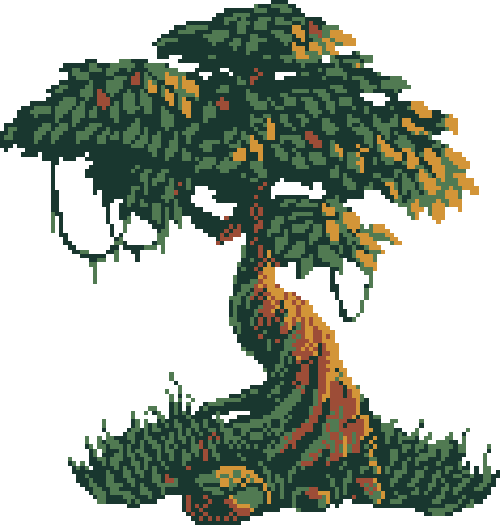

Bonsai é a arte que utiliza métodos e técnicas muito específicas para criar árvores em tamanhos bem menores do que os normais. O significado literal da palavra bonsai é “árvore em bandeja ou em vaso”. Para a produção de árvores em miniaturas são utilizadas espécies específicas, as miniaturas têm entre 15 e 60 cm. Apesar de fazermos associação imediata do bonsai com a cultura japonesa, foram os chineses os primeiros a cultivar árvores e arbusto em vasos de cerâmica. Mas foram os japoneses que aperfeiçoaram arte do bonsai. Existem vários estilos de bonsai, sendo os principais: Chokan, Moyogi, Shakan, kengai, Han-kengai, Fukinagashi.